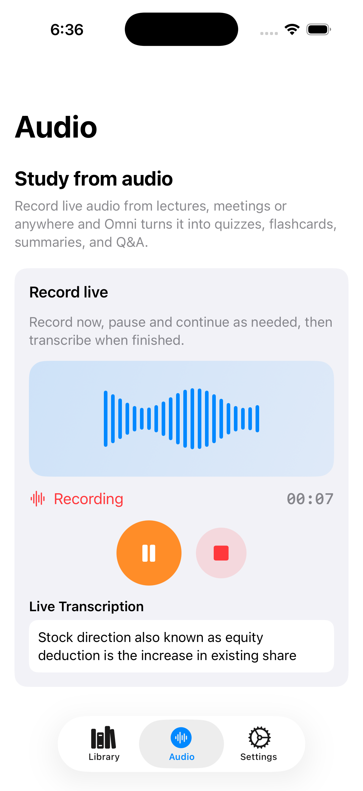

Use Case
Lecture Transcription App
Capture live class audio and turn it into searchable transcripts, key takeaways, and test-ready practice material.
Real-time recording workflow
Record in-app, then immediately analyze the transcript to generate summaries and question sets.
Made for deep learning
Use page-level and concept-level analysis features to understand difficult lecture content faster.
